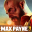

Max Payne 3Detalles
 |
|
| Tiempo de juego | No Jugado |
| Última actividad | Nunca |
| Añadido | 20/11/2025 14:20:04 |
| Modificado | 20/11/2025 14:23:55 |
| Estado de finalización | Not Played |
| Librería | Playnite |
| Fuente | |
| Plataforma | PC (Windows) |
| Fecha de lanzamiento | 15/5/2012 |
| Puntuación de la Comunidad | 82 |
| Puntuación de la Crítica | 89 |
| Puntuación de usuario | |
| Género | Shooter |
| Desarrollador | Rockstar London Rockstar New England Rockstar Toronto Rockstar Vancouver |
| Editor | Rockstar Games Take-Two Interactive |
| Característica | Multiplayer Single Player |
| Enlaces | Steam Official Website |
| Tag | |
Descripción
Olvidate de la nieve de Nueva York y de los poemas noir. Max Payne 3 es Rockstar Games agarrando al personaje, rompiéndolo en mil pedazos y tirándolo en medio del calor sofocante y la violencia brutal de São Paulo, Brasil.
Max tocó fondo. Ya no es policía. Es un guardaespaldas alcohólico y adicto a los analgésicos que intenta escapar de sus demonios, pero (como siempre) el quilombo lo encuentra a él.
¿Por qué es una Obra Maestra de la Acción?
- El Mejor "Gunplay" de la Historia: No es exageración. La sensación de disparo, el peso de las armas y el impacto de las balas son inigualables. Rockstar pulió las mecánicas hasta la perfección.
- Bullet Time 2.0: El tiempo bala volvió, pero más visceral que nunca. Tirarte en cámara lenta mientras reventás a tres tipos en el aire nunca se sintió tan bien.
- Física Euphoria: Cada caída, cada choque y cada disparo se siente real. Max se golpea contra los muebles, se tropieza, y los enemigos reaccionan a los impactos de forma procedural. ¡Nada de animaciones enlatadas!
- Narrativa "Man on Fire": Una historia oscura, cínica y deprimente, contada con un estilo visual único (pantalla dividida, distorsión de imagen, frases que aparecen en pantalla) que te mete en la cabeza rota de Max.
- La Banda Sonora: La banda HEALTH se mandó un soundtrack industrial y electrónico que te taladra el cerebro. El tema "TEARS" en la fase final del aeropuerto es CINE PURO.
Muchos lo criticaron por el cambio de estilo, pero la posta es que Max Payne 3 es uno de los shooters en tercera persona más sólidos, maduros y técnicamente impresionantes que existen. Es Max, viejo, cansado y pelado, pero más peligroso que nunca.